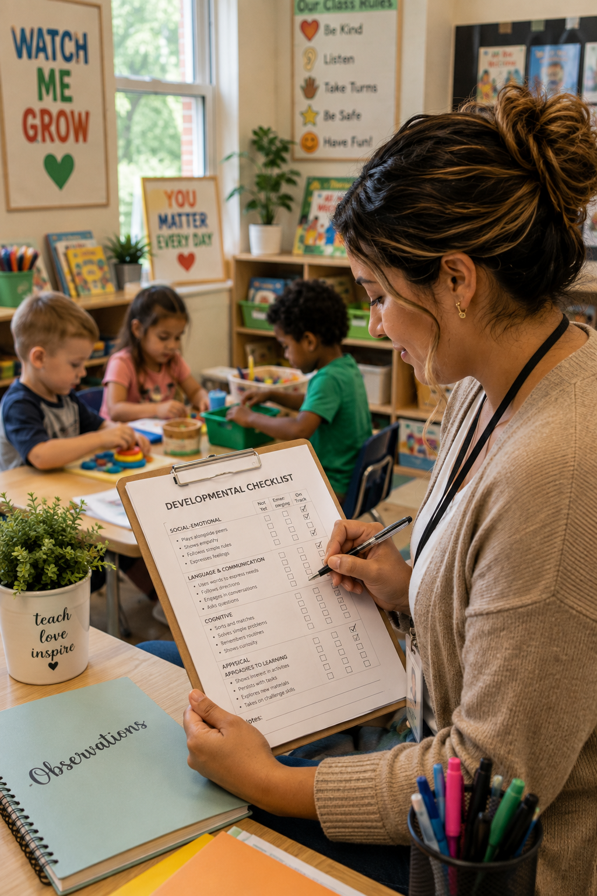

Social Emotional
Observe children's relationships, emotional regulation, confidence, empathy, self awareness, cooperation, and independence while interacting with peers and adults throughout the day.
Support every child's learning journey with classroom friendly developmental checklists designed specifically for Early Head Start, Head Start, Preschool, and Pre K educators. Monitor developmental milestones, celebrate children's growth, identify emerging skills, and use authentic assessment to guide intentional teaching throughout the school year.
Whether you're documenting daily progress, preparing child portfolios, planning individualized instruction, or meeting with families, these printable developmental checklists provide an organized way to track learning across every developmental domain while supporting meaningful observations and classroom documentation.
Developmental checklists help educators organize classroom observations into meaningful evidence of children's learning and growth. Rather than relying on memory alone, teachers can record developmental milestones, recognize emerging skills, celebrate accomplishments, and identify opportunities for continued learning. These organized records support intentional teaching while providing valuable information for families, administrators, and early intervention teams.
When combined with anecdotal records, photographs, learning stories, work samples, and family input, developmental checklists become an essential part of an authentic assessment system. Together, these tools provide a complete picture of each child's progress across every developmental domain throughout the school year.

Children develop at different rates across multiple developmental domains. Effective educators observe the whole child while recognizing strengths, emerging skills, and opportunities for continued growth through authentic classroom experiences.
Observe children's relationships, emotional regulation, confidence, empathy, self awareness, cooperation, and independence while interacting with peers and adults throughout the day.
Track listening skills, expressive language, vocabulary growth, conversations, comprehension, storytelling, and the ability to communicate ideas with confidence.
Monitor curiosity, memory, reasoning, problem solving, attention, exploration, scientific thinking, and children's ability to make meaningful connections.
Observe fine motor skills, gross motor coordination, balance, strength, self help skills, and children's growing independence during everyday classroom routines.
Record children's interest in books, storytelling, writing, alphabet knowledge, print awareness, phonological awareness, and early literacy behaviors.
Document counting, number recognition, sorting, patterning, measurement, shapes, spatial awareness, and mathematical thinking during play and investigation.
Monitor children's developmental progress using classroom friendly checklists designed for every stage of early childhood. Each checklist supports authentic assessment, intentional teaching, progress monitoring, and meaningful family communication.

Monitor early communication, sensory exploration, physical development, social emotional growth, and cognitive milestones during the first year of life.
Download Checklist →
Track language development, independence, gross motor skills, fine motor coordination, early problem solving, and social interactions.
Download Checklist →
Observe vocabulary growth, dramatic play, self help skills, curiosity, classroom participation, and relationships with peers.
Download Checklist →
Monitor literacy readiness, mathematics, communication, creativity, social emotional development, and cognitive growth.
Download Checklist →
Track kindergarten readiness, executive functioning, early writing, number concepts, phonological awareness, and problem solving.
Download Checklist →
One comprehensive checklist designed to monitor developmental progress throughout the year while supporting documentation and assessment.
Download Checklist →Developmental checklists provide an organized framework for documenting children's progress while helping educators plan meaningful learning experiences based on authentic observations.
Monitor developmental progress over weeks, months, and throughout the school year while celebrating children's accomplishments.
Use collected information to design intentional learning experiences that build upon children's strengths and interests.
Organize developmental evidence alongside photographs, work samples, and observations for professional child portfolios.
Share developmental progress with families using organized documentation that highlights children's growth and achievements.
Focus on observed skills and behaviors while documenting development using clear, objective language and authentic evidence.
Recognize that every child develops at their own pace while monitoring growth across all developmental domains.

Children demonstrate developmental growth throughout every classroom experience. During play, conversations, exploration, movement, problem solving, and daily routines, educators have countless opportunities to observe meaningful milestones. Developmental checklists help organize these observations while creating a clear picture of each child's learning journey over time.
Rather than focusing on isolated skills, effective assessment considers the whole child. When developmental checklists are paired with anecdotal records, photographs, work samples, learning stories, and family communication, teachers can confidently plan engaging experiences that support continued growth across every developmental domain.
Developmental Indicators
Printable Checklists
Developmental Domains
Classroom Ready
Save valuable planning time with a complete collection of classroom friendly developmental checklists designed for Early Head Start, Head Start, Preschool, and Pre K educators. Every checklist has been created to simplify documentation while supporting authentic assessment, intentional teaching, family communication, and ongoing progress monitoring.
Developmental checklists organized by age group from infancy through Pre K, making it easy to monitor growth at every stage of development.
Track children's developmental growth throughout the school year while identifying strengths, emerging skills, and future learning opportunities.
Organize developmental evidence alongside observations, work samples, photographs, and learning stories for comprehensive child portfolios.
Includes professional printable PDF files together with fully editable Microsoft Word versions for classroom customization.
Download professional developmental checklists and classroom documentation resources designed to simplify authentic assessment while supporting intentional teaching and meaningful family partnerships.

A complete collection of developmental checklists, milestone tracking forms, classroom documentation pages, and assessment resources organized into one convenient download.
Download Toolkit →
A quick reference guide explaining each developmental domain together with examples of observable skills and classroom behaviors.
Download Guide →
Monthly tracking sheets, milestone summaries, planning forms, and classroom documentation tools for monitoring children's progress throughout the year.
Download Pack →Continue building your professional assessment library with classroom resources that support observation, documentation, family partnerships, intentional planning, and authentic assessment throughout the school year.
Browse anecdotal records, running records, ABC observations, learning stories, daily observation sheets, and classroom documentation templates.
ExploreOrganize work samples, photographs, developmental evidence, and family contributions into professional child portfolios.
ExploreStrengthen partnerships with conference forms, communication logs, developmental summaries, and family planning resources.
ExploreDownload the complete Observation & Assessment Toolkit including printable PDF forms and editable Microsoft Word templates.
Download